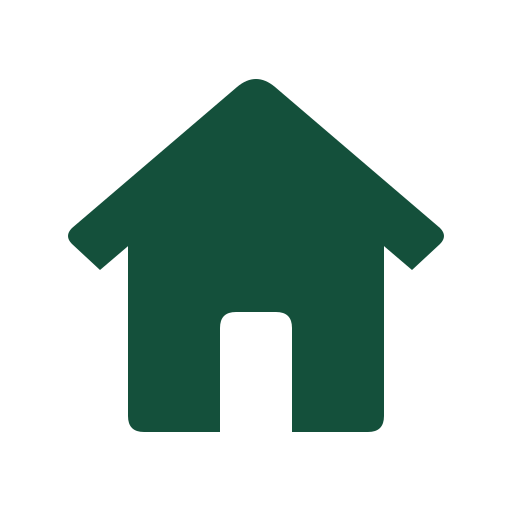

Chamber of Commerce
A resource hub for local businesses in Lagos — home, discover, directory, and join pages, built weeks 2 through 5.
View project →
Emmanuel EsomojumiI'm a software developer with a growing full-stack skill set spanning Python, C#, JavaScript, HTML, CSS, and Dart with Flutter. I build software with a focus on practical solutions, while continuing to strengthen my skills in web development, backend systems, and cross-platform applications.
Alongside software development, I work as an ICT instructor and IT support professional, teaching students from Grade 7 through Grade 12 in Lagos, Nigeria. My work includes programming, digital technology, and hardware/GSM repair, giving me experience not only building technology but also troubleshooting it and explaining it to others.
I'm also part of the NIIT (Forte Soft) team and currently co-developing a multi-vendor marketplace platform with another developer. Through BYU-Pathway, I'm building on my previous experience in web development while strengthening my understanding through structured courework. The WDD courses have helped me gain a deeper understanding of modern web development, WDD 231 course is helping me formalize and sharpen that foundation alongside the rest of my technical stack.
This site showcases my development work, projects, technical interests, and continued growth as a software developer.
The total credits for course listed above is 0
A resource hub for local businesses in Lagos — home, discover, directory, and join pages, built weeks 2 through 5.
View project →An independent site applying everything from the course, due in week 6.
View project →